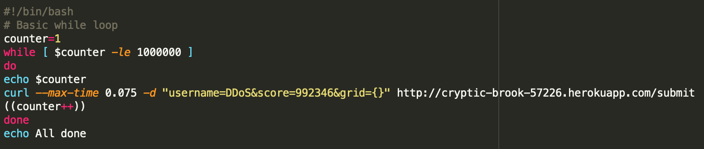
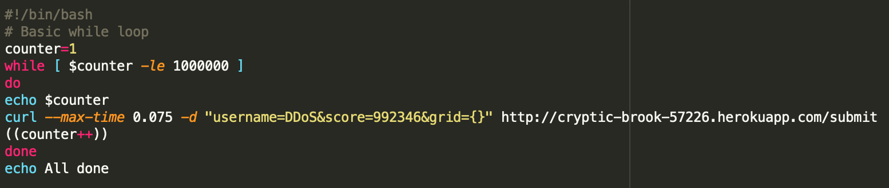

COMP20 Assignment 4: Security
Introduction
The product in question is a server that stores scores for the popular game, 2048. The server has three routes: a GET route (/) that displays all of the names, scores and dates for 2048 games submitted to the server, a GET route (/scores.json) that returns a list of scores for a specific user when specified in the query, and a POST route that submits an entry for a new score to be added to the server. I was hired to find possible vulnerabilities in this server, which could be used to exploit it for malicious reasons.
Methodology
I used a tool called Postman to send various queries to the given server, through both POST and GET routes. This application allowed me to easily visualize what I was sending in my request, as well as the response sent by the server.
I also used a bash script to send an absurdly large amount of requests to the server through multiple different sessions on the command line. This allowed me to successfully perform a DDoS attack on the server and overload it.
Abstract of Findings
Using the aforementioned methodology, any competent hacker would be able to:
- Serve any content they want to the users of a server
- Crash the server so that no one would be able to use it for any extended amount of time
- Gather all of the sensitive information that is stored internally within the server
Issues Found
-
Cross Site Scripting
- Description: The server innately trusts user input, which you should never, ever do. This means that the user can then insert a script as input to the server. When the server then serves content to a webpage, it will run the script and change the webpage to whatever the malicious user wants. This can be accomplished by submitting malicious content to the /submit POST route.
- Location: https://cryptic-brook-57226.herokuapp.com/submit
- Severity: Medium. The malicious user of the server can serve any desired content to subsequent users of the server, but he or she cannot access/alter the other data that is stored in a database on the server.
- Screenshots

- Resolution: Strip all special characters from user input before using it to serve content to a webpage.
req.body.username.replace(/[^\w\s]/gi, '');
req.body.score.replace(/[^\w\s]/gi, '');
req.body.grid.replace(/[^\w\s]/gi, '');
-
DDoS Attack
- Description: When given too many requests, the server will crash. This is called a Denial of Service Attack because it makes so many requests that the server can no longer handle requests and shuts down to everyone. In the case of this specific web server, the maximum amount of data allowed on the database was 33.00MB. Upon reaching this threshold, the server crashed. Given enough time, Heroku was able to restart the page and increase the threshold, but there was a period of time where the server could no longer handle requests because of the vast amount of data stored in the database.
- Location: https://cryptic-brook-57226.herokuapp.com/
- Severity: High. When experiencing a DDoS Attack, the server is no longer functional. When the server does not work, a lot of applications that are dependent on it are likely to not function as well.
- Screenshots
 

- Resolution: Set up API tokens that are needed to submit a request, and only allow a specific number of requests for that specific API in any given period of time. For example, with the MBTA API, a normal API token can only make 1000 requests per minute.
-
Exposed Database
- Description: A database should be able to store a vast amount of data. Most of the time, when giving users the ability to retreive specific documents in the database, you don't want to give them access to every document. In the /scores.json route, you can access every document in the scores database by giving a key value pair that accesses other
- Location: https://cryptic-brook-57226.herokuapp.com/scores.json
- Severity: Low. In this specific instance, users can access every element in the collection by accessing the main GET route (/), but in other situations where the entirety of the database isn't readily available to any user, this could likely expose sensitive information that isn't supposed to be publicly accessible.
- Screenshots
- Resolution: Strip all special characters in both the query key and value.
req.query.username.replace(/[^\w\s]/gi, '');
Conclusion
After extensive hacking and attempted breaches into the 2048 game server, I have concluded that it has underlying vulnerabilities that could easily compromise its integrity when used by the wrong people. Some solutions of the solutions are rather easy to implement with little to no effort, but preventing a DDoS attack could mean reworking the structure of your server to prevent malicious use.
References